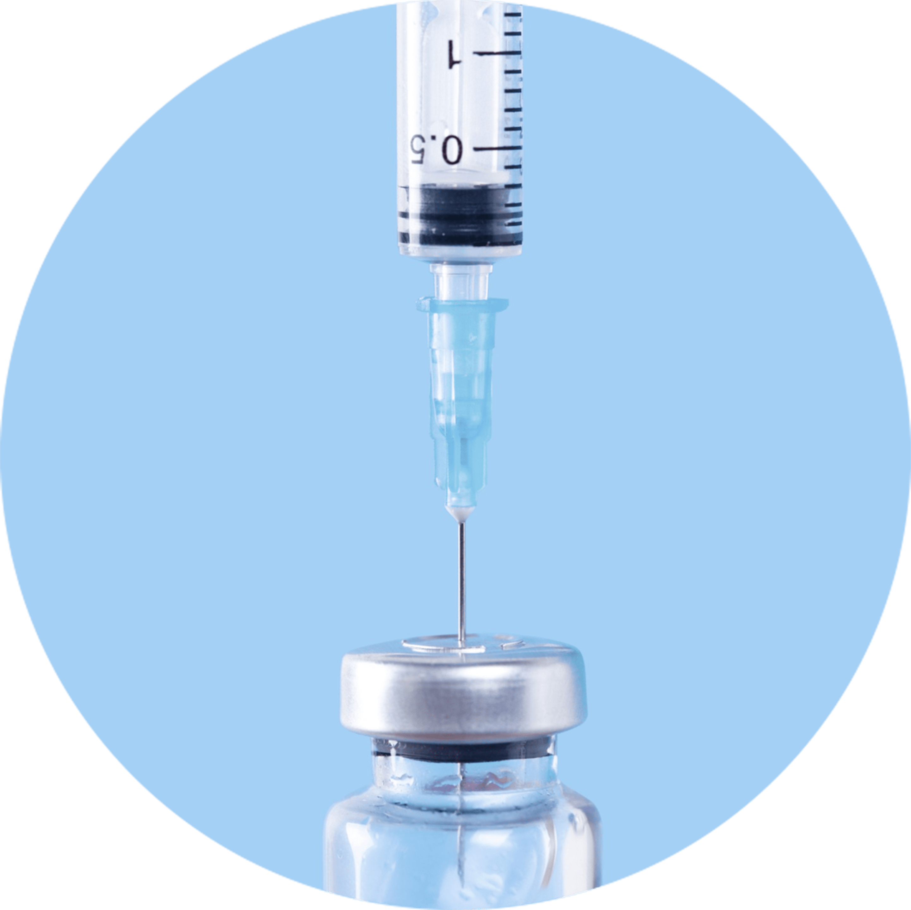
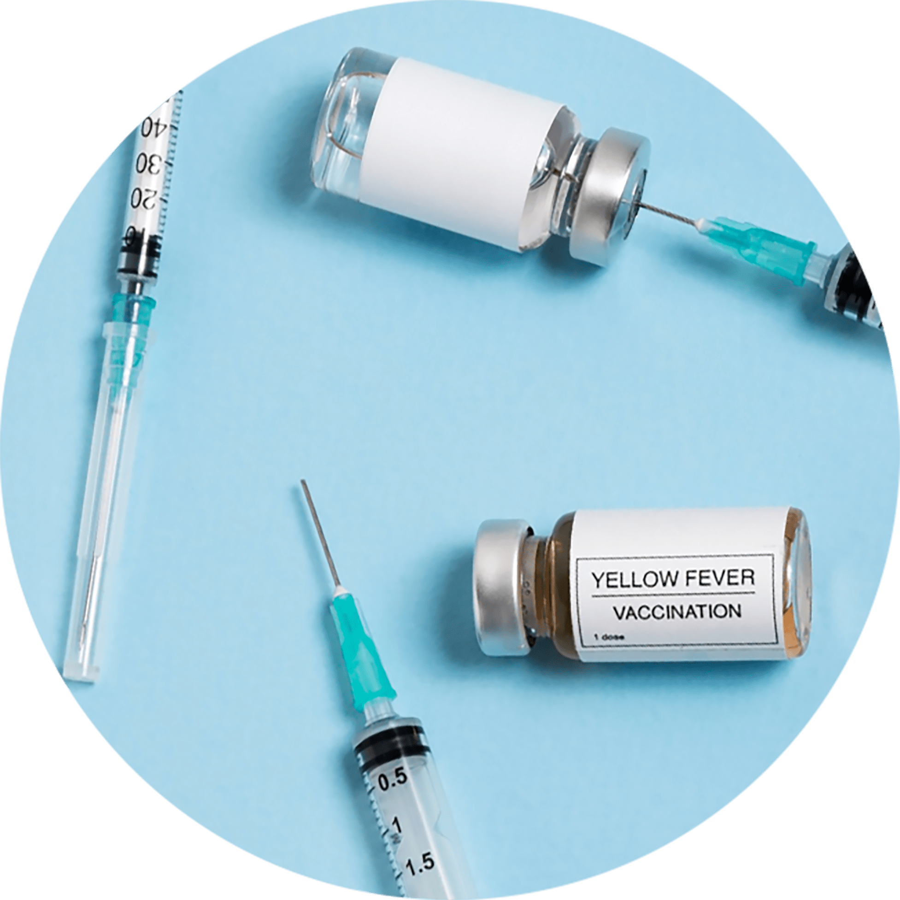
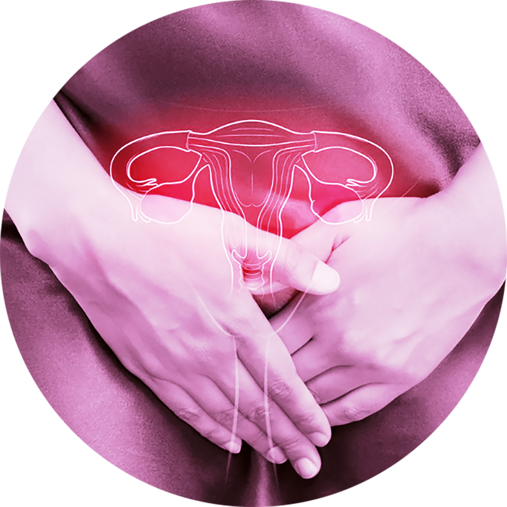
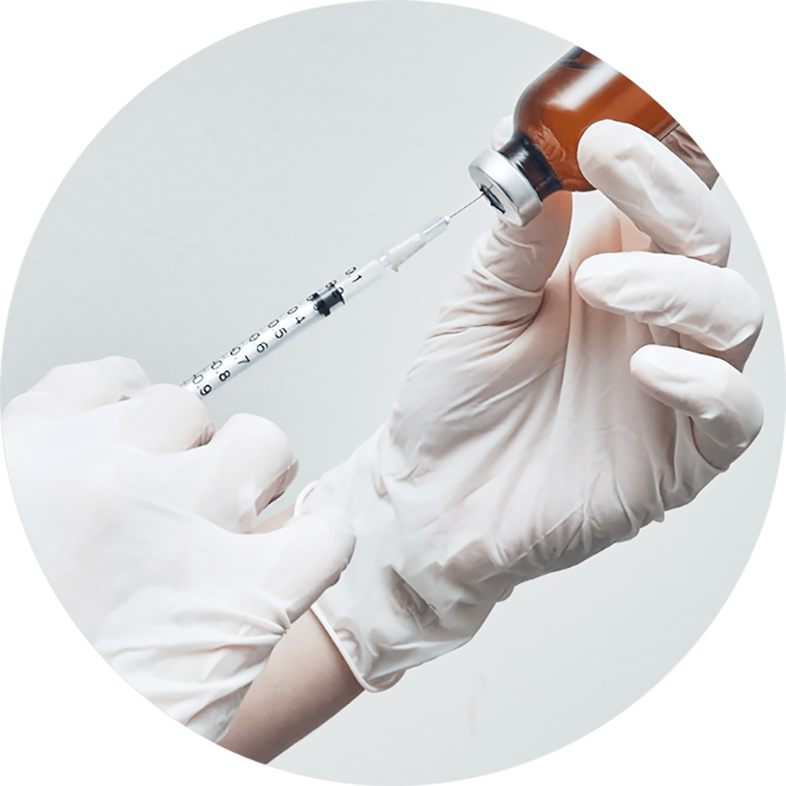
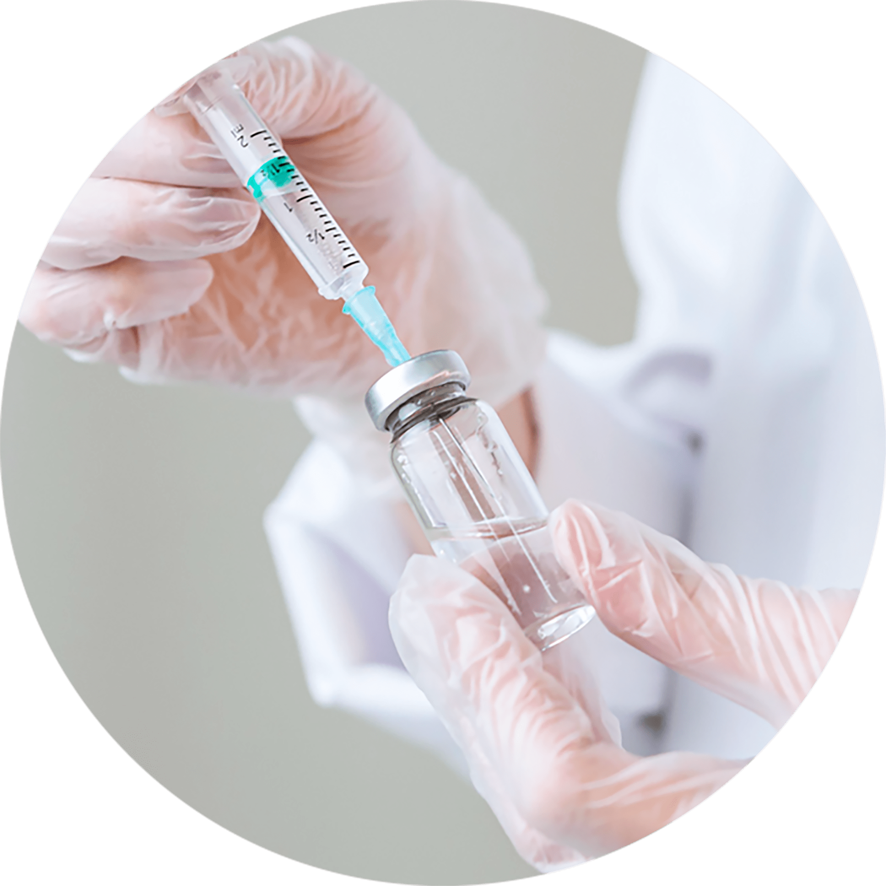
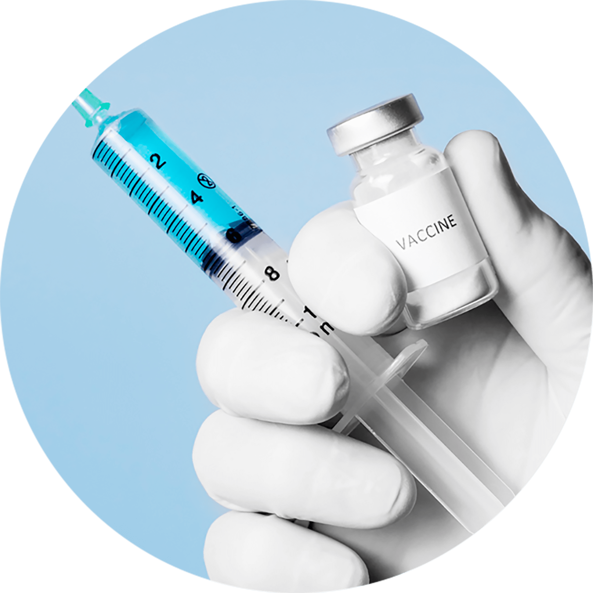
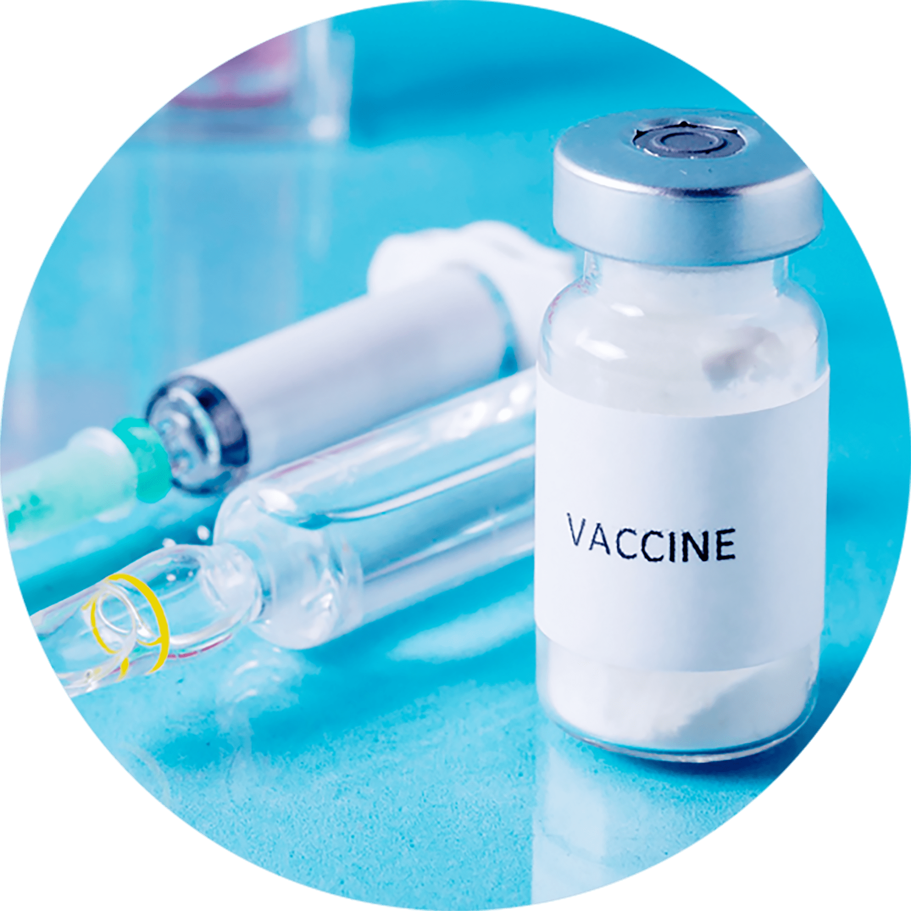

나를 위한 예방주사 클리닉
건강한 삶의 첫걸음 나를 위한
“예방주사 클리닉”
나를위한 산부인과에서 행복한 삶을 유지하세요
나를위한 예방주사 클리닉

여러 가지의 바이러스와 병균에 맞서 전염병 발생률을 줄이고,
이로 인한 피해를 감소시켜 줍니다. 특히 여성의 경우 풍진,
A형 간염, B형 간염,
자궁경부암 등으로부터 안전하지 않아
주기적인 검사와 예방접종으로
질병을 미리 예방해야
건강한 삶을 유지할 수 있습니다.
예방주사 종류
-
풍진 주사

임신 계획 중인 여성에게
필요한
항체입니다.
임신 초 감염 시
80~90% 이상 정신
발육부전,
심장기형,
소두증 등 원인이 됩니다. -
자궁경부암 주사

HPV(인유두종바이러스)에 의해
자궁 입구에 생기는 암을
말합니다.
20세 전후에 성접촉과
외부 자극이
있는 경우 발병
위험이 높습니다. -
수두 백신 주사

집단활동 시 전염률이
높은 감염증입니다.
임신 초기 수두염은 태아에게
치명적인 선천성 기형이나
신생아 수두 증후군의
원인이 됩니다. -
파상풍 주사

신생아 파상풍은 드물지만,
치사율이 높아 가임기 여성에게
필수적입니다.
(1회 접종, 82년 이전 출생자는
3회 접종 권함) -
A형 감염 주사

성인 감염 시 간 기능 부전까지
나타나는
심각한 질환으로
항체 검사 후
6개월에 걸쳐
2회 접종으로
평생 면역을
지킬 수 있습니다. -
B형 감염 주사

태반을 통하여 모자간
수직감염이 가능합니다.
간암, 간염 등의 원인이 되며
5개월에 걸쳐 3회 접종을 합니다.